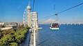
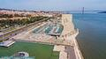
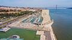
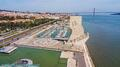

Fotografias
Galeria com efeitos de transição.


 




Vídeo
Vídeo incorporado e responsivo.
Poesia
Texto estilizado com seletores CSS.
Lisboa desperta ao som do Tejo,
Elétricos dançam nas ruas de pedra,
Miradouros contam histórias ao vento,
E o sol se põe tingindo a cidade de ouro.
Entre ruelas e fados, o coração pulsa,
Lisboa, cidade de sonhos e memórias.